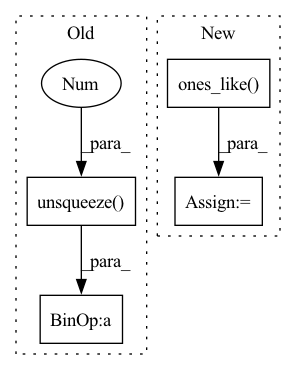

Pattern ID :22181

Before Change
for i in range(x.size(0)):
mask = Masks.get_ff_mask(height, width)
mask_all.append(mask)
mask = torch.from_numpy(np.asarray(mask_all)).unsqueeze(1).float()
ones = torch.ones(x.size(0), 1, x.size(2), x.size(3))
mask = ones * mask
if x.is_cuda:
mask = mask.cuda()
result = x * (1. - mask)
After Change
def mask_image(x, config):
height, width, _ = config["image_shape"]
mask = torch.ones_like(x)
temp = torch.ones_like(x)
for i in range(x.size(0)):
mask_temp = Masks.get_ff_mask(height, width)
mask[i,:,:,:] = temp[i,:,:,:] * mask_temp
// mask_all.append(mask)
// mask = torch.from_numpy(np.asarray(mask_all)).unsqueeze(1).float()
// ones = torch.ones(x.size(0), 1, x.size(2), x.size(3))
In pattern: SUPERPATTERN
Frequency: 3
Non-data size: 4
Instances
Fragment ID: 70192254
Project Name: sayednadim/global-and-local-attention-based-free-form-image-inpainting
Commit Name: f42c7e888ac77a88b8ece8c9bf9adabba796d7ca
Time: 2020-08-05
Author: smnadimuddin@gmail.com
File Name: model/mask.py
M Class Name: AnonimousClass
N Class Name: AnonimousClass
M Method Name: mask_image(2)
N Method Name: mask_image(2)
M Parent Class:
N Parent Class:
M File Name: model/mask.py
N File Name: model/mask.py
M Start Line: 40
M End Line: 46
N Start Line: 40
N End Line: 44
'>
Before Change
encode_mask = torch.arange(encoder_variables.size(1)).unsqueeze(0) >= out["encode_lengths"].unsqueeze(-1)
encoder_variables = encoder_variables.masked_fill(encode_mask.unsqueeze(-1), 0.0).sum(
dim=1
) / encode_mask.logical_not().sum(dim=1).unsqueeze(-1)
decoder_variables = out["decoder_variables"].squeeze()
decode_mask = torch.arange(decoder_variables.size(1)).unsqueeze(0) >= out["decode_lengths"].unsqueeze(-1)
decoder_variables = decoder_variables.masked_fill(decode_mask.unsqueeze(-1), 0.0).sum(
After Change
encoder_variables = out["encoder_variables"].squeeze()
encode_mask = torch.arange(encoder_variables.size(1)).unsqueeze(0) >= out["encode_lengths"].unsqueeze(-1)
encoder_variables = encoder_variables.masked_fill(encode_mask.unsqueeze(-1), 0.0).sum(dim=1)
encoder_variables /= (
out["encode_lengths"].where(out["encode_lengths"] > 0, torch.ones_like(out["encode_lengths"])).unsqueeze(-1)
)
decoder_variables = out["decoder_variables"].squeeze()
'>
Fragment ID: 70192266
Project Name: jdb78/pytorch-forecasting
Commit Name: 220d37d8022703f4b190ec9e46c12a4d1dd4500a
Time: 2020-06-21
Author: beitner.jan@bcg.com
File Name: temporal_fusion_transformer_pytorch/model/__init__.py
M Class Name: TemporalFusionTransformer
N Class Name: TemporalFusionTransformer
M Method Name: interpret_output(4)
N Method Name: interpret_output(4)
M Parent Class: pl.LightningModule
N Parent Class: pl.LightningModule
M File Name: temporal_fusion_transformer_pytorch/model/__init__.py
N File Name: temporal_fusion_transformer_pytorch/model/__init__.py
M Start Line: 480
M End Line: 489
N Start Line: 495
N End Line: 503
'>
Before Change
min_sum = 0 if min_output_length is None else (min_output_length * beta)
max_sum = 1e8 if max_output_length is None else (max_output_length * beta)
desired_sum = alpha_sum.clip(min=min_sum, max=max_sum) + eps
alpha = alpha * (desired_sum / alpha_sum).unsqueeze(1)
alpha_sum = desired_sum
feat_lengths = (alpha_sum / beta).floor().long()
T = feat_lengths.max()
After Change
if extend_mask.any():
// (B, T, C), may have infs so need the mask
upscale = (
torch.ones_like(output)
.scatter(
1,
feat_lengths.view(B, 1, 1).expand(-1, -1, C),
beta / tail_weights.view(B, 1, 1).expand(-1, -1, C),
)
)
output[extend_mask] *= upscale[extend_mask]
feat_lengths += extend_mask.long()
T = feat_lengths.max()
output = output[:, :T, :]
'>
Fragment ID: 70192263
Project Name: george0828zhang/torch_cif
Commit Name: 68e2689c475308cd5043cf1d25c49891b23e946a
Time: 2022-02-23
Author: cc.chang0828@gmail.com
File Name: cif.py
M Class Name: AnonimousClass
N Class Name: AnonimousClass
M Method Name: cif_function(7)
N Method Name: cif_function(9)
M Parent Class:
N Parent Class:
M File Name: cif.py
N File Name: cif.py
M Start Line: 29
M End Line: 216
N Start Line: 27
N End Line: 197